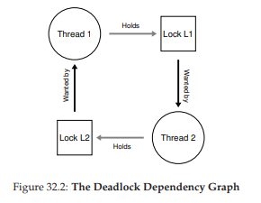

32 Các Vấn Đề Thường Gặp Trong Lập Trình Đồng Thời (Concurrency)
Trong nhiều năm qua, các nhà nghiên cứu đã dành rất nhiều thời gian và công sức để tìm hiểu về các lỗi (bug) trong lập trình đồng thời (concurrency bugs). Phần lớn các nghiên cứu ban đầu tập trung vào deadlock (bế tắc), một chủ đề mà chúng ta đã đề cập ở các chương trước, nhưng giờ sẽ đi sâu hơn [C+71]. Các nghiên cứu gần đây hơn tập trung vào việc tìm hiểu các loại lỗi đồng thời phổ biến khác (tức là lỗi non-deadlock – không phải bế tắc). Trong chương này, chúng ta sẽ xem xét một số ví dụ về các vấn đề đồng thời được tìm thấy trong mã nguồn thực tế, nhằm hiểu rõ hơn những vấn đề cần chú ý. Và đây là vấn đề trọng tâm của chương:
THE CRUX: CÁCH XỬ LÝ CÁC LỖI ĐỒNG THỜI PHỔ BIẾN
Các lỗi đồng thời thường xuất hiện theo nhiều mẫu (pattern) quen thuộc. Biết được những mẫu này là bước đầu tiên để viết ra mã đồng thời (concurrent code) chính xác và đáng tin cậy hơn.
32.1 Có Những Loại Lỗi Nào?
Câu hỏi đầu tiên và rõ ràng nhất là: Những loại lỗi đồng thời nào thường xuất hiện trong các chương trình phức tạp, đa luồng?
Câu hỏi này khó trả lời một cách tổng quát, nhưng may mắn là đã có những nghiên cứu thực nghiệm. Cụ thể, chúng ta dựa vào nghiên cứu của Lu và cộng sự [L+08], trong đó họ phân tích chi tiết một số ứng dụng đồng thời phổ biến để hiểu rõ các loại lỗi thường gặp trong thực tế.
Nghiên cứu này tập trung vào bốn ứng dụng mã nguồn mở quan trọng:
- MySQL (một hệ quản trị cơ sở dữ liệu phổ biến)
- Apache (một web server nổi tiếng)
- Mozilla (trình duyệt web nổi tiếng)
- OpenOffice (bộ ứng dụng văn phòng miễn phí, tương tự MS Office)
Trong nghiên cứu, các tác giả xem xét các lỗi đồng thời đã được phát hiện và sửa trong từng mã nguồn này, biến công việc của lập trình viên thành một phân tích định lượng về lỗi. Hiểu được kết quả này sẽ giúp bạn biết những vấn đề nào thực sự xảy ra trong các hệ thống phần mềm đã trưởng thành.
Hình dưới đây (Hình 32.1) tóm tắt các lỗi mà Lu và cộng sự đã nghiên cứu. Từ bảng, ta thấy có tổng cộng 105 lỗi, trong đó 74 lỗi là non-deadlock và 31 lỗi là deadlock. Ngoài ra, số lượng lỗi ở mỗi ứng dụng cũng khác nhau: OpenOffice chỉ có 8 lỗi đồng thời, trong khi Mozilla có gần 60.

Hình 32.1: Các lỗi trong ứng dụng hiện đại
| Application | Chức năng | Non-Deadlock | Deadlock |
| :---------- | :---------------- | :----------- | :------- |
| MySQL | Database Server | 14 | 9 |
| Apache | Web Server | 13 | 4 |
| Mozilla | Web Browser | 41 | 16 |
| OpenOffice | Office Suite | 6 | 2 |
| Total | | 74 | 31 |
Giờ đây, chúng ta sẽ đi sâu hơn vào hai nhóm lỗi này (non-deadlock và deadlock).
- Với nhóm non-deadlock, chúng ta sẽ dùng các ví dụ từ nghiên cứu để phân tích.
- Với nhóm deadlock, chúng ta sẽ bàn về các hướng tiếp cận nhằm phòng tránh, né tránh hoặc xử lý deadlock.
32.2 Lỗi Non-Deadlock
Theo nghiên cứu của Lu, lỗi non-deadlock chiếm đa số trong các lỗi đồng thời. Nhưng cụ thể chúng là gì? Chúng xuất hiện như thế nào? Và làm sao để sửa?
Lu và cộng sự chỉ ra hai loại lỗi non-deadlock chính:
- Atomicity violation (vi phạm tính nguyên tử)
- Order violation (vi phạm thứ tự)
Lỗi Atomicity Violation
Loại lỗi đầu tiên là atomicity violation. Dưới đây là một ví dụ đơn giản được tìm thấy trong MySQL. Trước khi đọc lời giải thích, hãy thử tìm lỗi.

Hình 32.2: Atomicity Violation (atomicity.c)
Trong ví dụ này, hai thread (luồng) khác nhau truy cập trường proc_info trong cấu trúc thd.
- Thread thứ nhất kiểm tra xem giá trị có khác NULL không, rồi in ra giá trị đó.
- Thread thứ hai đặt giá trị này thành NULL.
Rõ ràng, nếu thread thứ nhất kiểm tra xong nhưng bị ngắt trước khi gọi fputs, thì thread thứ hai có thể chạy xen vào và đặt con trỏ thành NULL. Khi thread thứ nhất tiếp tục, nó sẽ bị crash vì fputs sẽ dereference một con trỏ NULL.
Định nghĩa chính thức của atomicity violation theo Lu et al.:
“Tính tuần tự mong muốn giữa nhiều truy cập bộ nhớ bị vi phạm (tức là một đoạn code được dự định là nguyên tử, nhưng tính nguyên tử không được đảm bảo khi thực thi).”
Trong ví dụ trên, đoạn code giả định rằng việc kiểm tra proc_info khác NULL và việc sử dụng proc_info trong fputs() là nguyên tử. Khi giả định này sai, chương trình sẽ không hoạt động như mong muốn.
Cách sửa:
Giải pháp thường (nhưng không phải luôn) khá đơn giản: thêm lock (khóa) quanh các truy cập biến chia sẻ.
Trong ví dụ sửa (Hình 32.3), ta thêm khóa proc_info_lock để đảm bảo rằng khi bất kỳ thread nào truy cập proc_info, nó phải giữ khóa này. Tất nhiên, mọi đoạn code khác truy cập cấu trúc này cũng phải lấy cùng khóa.

Hình 32.3: Atomicity Violation Fixed (atomicity_fixed.c)
Lỗi Order Violation
Loại lỗi non-deadlock phổ biến thứ hai là order violation. Đây là một ví dụ khác; hãy thử tìm lỗi.

Hình 32.4: Ordering Bug (ordering.c)
Như bạn có thể đoán, mã trong Thread 2 giả định rằng biến mThread đã được khởi tạo (và khác NULL). Tuy nhiên, nếu Thread 2 chạy ngay sau khi được tạo, mThread vẫn chưa được gán giá trị khi được truy cập trong mMain() của Thread 2, dẫn đến crash do dereference con trỏ NULL.
Giả sử mThread ban đầu là NULL; nếu không, lỗi còn có thể nghiêm trọng hơn khi truy cập vào vùng nhớ tùy ý.

Hình 32.5: Fixing The Ordering Violation (ordering_fixed.c)
Định nghĩa chính thức của order violation:
“Thứ tự mong muốn giữa hai (hoặc nhóm) truy cập bộ nhớ bị đảo ngược (tức là A luôn phải chạy trước B, nhưng thứ tự này không được đảm bảo khi thực thi)” [L+08].
Cách sửa:
Giải pháp là ép buộc thứ tự thực thi. Như đã bàn trước đây, sử dụng condition variable (biến điều kiện) là một cách dễ và hiệu quả để thêm đồng bộ hóa kiểu này vào mã.
Trong ví dụ sửa (Hình 32.5), ta thêm:
- Condition variable
mtCond - Lock
mtLock - Biến trạng thái
mtInit
Khi mã khởi tạo chạy, nó đặt mtInit = 1 và gửi tín hiệu (signal) rằng đã xong.
- Nếu Thread 2 chạy trước thời điểm này, nó sẽ chờ tín hiệu và thay đổi trạng thái.
- Nếu Thread 2 chạy sau, nó sẽ thấy
mtInit = 1và tiếp tục bình thường.
Lưu ý: ta có thể dùng chính mThread làm biến trạng thái, nhưng ở đây tách riêng để đơn giản. Khi thứ tự giữa các thread quan trọng, condition variable hoặc semaphore là công cụ hữu ích.
Tóm tắt về Non-Deadlock Bugs
Một tỷ lệ lớn (97%) các lỗi non-deadlock (không phải bế tắc) được Lu và cộng sự nghiên cứu là thuộc một trong hai loại: atomicity violation (vi phạm tính nguyên tử) hoặc order violation (vi phạm thứ tự). Do đó, bằng cách suy nghĩ cẩn thận về các mẫu lỗi này, lập trình viên có thể tránh được chúng hiệu quả hơn. Hơn nữa, khi các công cụ kiểm tra mã tự động ngày càng phát triển, chúng nên tập trung vào hai loại lỗi này, vì chúng chiếm phần lớn các lỗi non-deadlock được phát hiện trong môi trường triển khai thực tế.
Tuy nhiên, không phải tất cả các lỗi đều dễ sửa như các ví dụ chúng ta đã xem ở trên. Một số lỗi đòi hỏi phải hiểu sâu hơn về hoạt động của chương trình, hoặc cần tái cấu trúc một lượng lớn mã hoặc cấu trúc dữ liệu để khắc phục. Để biết thêm chi tiết, hãy đọc bài báo xuất sắc (và dễ đọc) của Lu và cộng sự.
32.3 Deadlock Bugs
Ngoài các lỗi đồng thời đã đề cập ở trên, một vấn đề kinh điển thường xuất hiện trong nhiều hệ thống đồng thời với giao thức khóa (locking protocol) phức tạp được gọi là deadlock (bế tắc). Deadlock xảy ra, ví dụ, khi một thread (luồng) — giả sử Thread 1 — đang giữ một khóa (L1) và chờ một khóa khác (L2); không may, thread khác (Thread 2) đang giữ L2 lại chờ L1 được giải phóng. Dưới đây là một đoạn code minh họa khả năng xảy ra deadlock như vậy:
Thread 1:
pthread_mutex_lock(L1);
pthread_mutex_lock(L2);
Thread 2:
pthread_mutex_lock(L2);
pthread_mutex_lock(L1);

Hình 32.6: Simple Deadlock (deadlock.c)
Lưu ý rằng khi chạy đoạn code này, deadlock không nhất thiết xảy ra; nó chỉ xảy ra nếu, ví dụ, Thread 1 lấy được L1 trước, sau đó xảy ra context switch (chuyển ngữ cảnh) sang Thread 2. Lúc này, Thread 2 lấy L2 và cố gắng lấy L1. Kết quả là chúng ta có deadlock, vì mỗi thread đang chờ thread kia và không thread nào có thể tiếp tục chạy. Xem Hình 32.7 để thấy minh họa trực quan; sự xuất hiện của một chu trình (cycle) trong đồ thị là dấu hiệu của deadlock.

Hình 32.7: The Deadlock Dependency Graph
Hình này cho thấy vấn đề một cách rõ ràng. Vậy lập trình viên nên viết mã như thế nào để xử lý deadlock?
THE CRUX: CÁCH ĐỐI PHÓ VỚI DEADLOCK
Chúng ta nên xây dựng hệ thống như thế nào để phòng ngừa, tránh, hoặc ít nhất là phát hiện và phục hồi sau deadlock? Liệu đây có phải là một vấn đề thực sự trong các hệ thống ngày nay?
Tại sao Deadlock xảy ra?
Như bạn có thể nghĩ, các deadlock đơn giản như ví dụ trên dường như có thể tránh được dễ dàng. Ví dụ, nếu cả Thread 1 và Thread 2 đều đảm bảo lấy khóa theo cùng một thứ tự, deadlock sẽ không bao giờ xảy ra. Vậy tại sao deadlock vẫn xảy ra?
Nguyên nhân thứ nhất là trong các mã nguồn lớn, các phụ thuộc (dependency) phức tạp giữa các thành phần thường xuất hiện. Lấy ví dụ hệ điều hành: hệ thống virtual memory (bộ nhớ ảo) có thể cần truy cập file system (hệ thống tệp) để nạp (page in) một khối dữ liệu từ đĩa; ngược lại, file system có thể cần một trang bộ nhớ để đọc khối dữ liệu đó vào, và do đó phải liên hệ lại với virtual memory. Vì vậy, việc thiết kế chiến lược khóa trong các hệ thống lớn phải được thực hiện cẩn thận để tránh deadlock trong trường hợp các phụ thuộc vòng tròn (circular dependency) xuất hiện tự nhiên trong mã.
Nguyên nhân thứ hai là do bản chất của encapsulation (đóng gói). Là lập trình viên, chúng ta được dạy phải ẩn chi tiết cài đặt để phần mềm dễ xây dựng theo mô-đun. Không may, tính mô-đun này lại không phù hợp với cơ chế khóa. Như Jula và cộng sự chỉ ra [J+08], một số giao diện tưởng chừng vô hại lại gần như “mời gọi” deadlock. Ví dụ, hãy xem lớp Vector trong Java và phương thức AddAll(). Phương thức này được gọi như sau:
Vector v1, v2;
v1.AddAll(v2);
Bên trong, vì phương thức cần đảm bảo an toàn đa luồng (multi-thread safe), nên phải lấy khóa cho cả vector được thêm vào (v1) và vector tham số (v2). Phương thức này lấy các khóa theo một thứ tự tùy ý (giả sử v1 trước rồi v2) để thêm nội dung của v2 vào v1. Nếu một thread khác gọi v2.AddAll(v1) gần như cùng lúc, chúng ta có khả năng xảy ra deadlock — và điều này hoàn toàn ẩn đối với ứng dụng gọi.
Các điều kiện để xảy ra Deadlock
Bốn điều kiện cần đồng thời thỏa mãn để một deadlock (bế tắc) xảy ra [C+71]:
- Mutual exclusion (loại trừ lẫn nhau): Các thread (luồng) yêu cầu quyền kiểm soát độc quyền đối với tài nguyên mà chúng cần (ví dụ: một thread giữ một lock).
- Hold-and-wait (giữ và chờ): Các thread giữ các tài nguyên đã được cấp cho chúng (ví dụ: các lock mà chúng đã lấy) trong khi chờ thêm các tài nguyên khác (ví dụ: các lock mà chúng muốn lấy tiếp).
- No preemption (không cưỡng đoạt): Các tài nguyên (ví dụ: lock) không thể bị thu hồi cưỡng bức từ các thread đang giữ chúng.
- Circular wait (chờ vòng tròn): Tồn tại một chuỗi vòng tròn các thread, trong đó mỗi thread giữ một hoặc nhiều tài nguyên (ví dụ: lock) mà thread tiếp theo trong chuỗi đang yêu cầu.
Nếu bất kỳ điều kiện nào trong bốn điều kiện trên không được thỏa mãn, deadlock sẽ không thể xảy ra. Do đó, trước tiên chúng ta sẽ tìm hiểu các kỹ thuật phòng ngừa deadlock; mỗi chiến lược trong số này nhằm ngăn chặn một trong các điều kiện trên xuất hiện, và vì vậy là một cách tiếp cận để xử lý vấn đề deadlock.
Phòng ngừa (Prevention)
Circular Wait
Có lẽ kỹ thuật phòng ngừa thực tiễn nhất (và chắc chắn là thường được áp dụng) là viết mã khóa (locking code) sao cho không bao giờ tạo ra tình huống circular wait. Cách đơn giản nhất để làm điều này là đặt một thứ tự toàn phần (total ordering) cho việc lấy lock. Ví dụ, nếu hệ thống chỉ có hai lock (L1 và L2), bạn có thể ngăn deadlock bằng cách luôn lấy L1 trước L2. Thứ tự nghiêm ngặt này đảm bảo không xuất hiện vòng chờ, và do đó không có deadlock.
Tất nhiên, trong các hệ thống phức tạp hơn, sẽ có nhiều hơn hai lock, và việc đặt thứ tự toàn phần cho tất cả lock có thể khó thực hiện (và đôi khi không cần thiết). Vì vậy, thứ tự một phần (partial ordering) có thể là một cách hữu ích để tổ chức việc lấy lock nhằm tránh deadlock.
Một ví dụ thực tế xuất sắc về partial lock ordering có thể thấy trong mã quản lý ánh xạ bộ nhớ (memory mapping) của Linux [T+94] (phiên bản 5.2); phần chú thích ở đầu mã nguồn liệt kê 10 nhóm thứ tự lấy lock khác nhau, bao gồm các thứ tự đơn giản như “i_mutex trước i_mmap_rwsem” và các thứ tự phức tạp hơn như “i_mmap_rwsem trước private lock trước swap lock trước i_pages lock”.
TIP: ÁP DỤNG THỨ TỰ LẤY LOCK THEO ĐỊA CHỈ LOCK
Trong một số trường hợp, một hàm cần lấy hai (hoặc nhiều) lock; do đó, chúng ta biết rằng phải cẩn thận nếu không deadlock có thể xảy ra. Hãy tưởng tượng một hàm được gọi như sau:
do_something(mutex_t *m1, mutex_t *m2)
Nếu mã luôn lấym1trướcm2(hoặc luônm2trướcm1), deadlock vẫn có thể xảy ra, vì một thread có thể gọido_something(L1, L2)trong khi thread khác gọido_something(L2, L1).
Để tránh vấn đề này, lập trình viên thông minh có thể sử dụng địa chỉ của mỗi lock như một cách để xác định thứ tự lấy lock. Bằng cách lấy lock theo thứ tự từ cao xuống thấp hoặc từ thấp lên cao dựa trên địa chỉ,do_something()có thể đảm bảo luôn lấy lock theo cùng một thứ tự, bất kể thứ tự truyền tham số.
Ví dụ mã:if (m1 > m2) { // lấy theo thứ tự địa chỉ từ cao xuống thấp pthread_mutex_lock(m1); pthread_mutex_lock(m2); } else { pthread_mutex_lock(m2); pthread_mutex_lock(m1); } // Giả định rằng m1 != m2 (không phải cùng một lock)Bằng cách sử dụng kỹ thuật đơn giản này, lập trình viên có thể đảm bảo một cách triển khai lấy nhiều lock không deadlock, vừa đơn giản vừa hiệu quả.
Như bạn có thể hình dung, cả total ordering và partial ordering đều yêu cầu thiết kế chiến lược khóa cẩn thận và phải được xây dựng rất kỹ lưỡng. Hơn nữa, thứ tự chỉ là một quy ước, và một lập trình viên cẩu thả có thể dễ dàng bỏ qua giao thức khóa, dẫn đến deadlock. Cuối cùng, lock ordering đòi hỏi hiểu sâu về toàn bộ mã nguồn và cách các hàm được gọi; chỉ một sai sót cũng có thể dẫn đến “từ D”^[1].
Hold-and-wait
Điều kiện hold-and-wait để xảy ra deadlock có thể được loại bỏ bằng cách lấy tất cả lock cùng một lúc, theo cách nguyên tử (atomically). Trong thực tế, điều này có thể được thực hiện như sau:
^[1]: “Từ D” ở đây ám chỉ “Deadlock”.
Bằng cách trước tiên lấy lock prevention, đoạn code này đảm bảo rằng sẽ không có sự chuyển đổi thread (luồng) không đúng thời điểm xảy ra trong quá trình lấy lock, và do đó deadlock (bế tắc) một lần nữa có thể được tránh. Tất nhiên, điều này yêu cầu rằng bất cứ khi nào một thread muốn lấy một lock nào đó, nó phải lấy lock toàn cục prevention trước. Ví dụ, nếu một thread khác đang cố lấy các lock L1 và L2 theo một thứ tự khác, điều đó vẫn ổn, vì nó sẽ giữ lock prevention trong khi thực hiện.
Lưu ý rằng giải pháp này có một số vấn đề. Giống như trước đây, encapsulation (đóng gói) lại gây bất lợi: khi gọi một routine (hàm/thủ tục), cách tiếp cận này yêu cầu chúng ta phải biết chính xác những lock nào cần giữ và lấy chúng trước. Kỹ thuật này cũng có khả năng làm giảm concurrency (mức độ đồng thời), vì tất cả lock phải được lấy sớm (cùng lúc) thay vì chỉ khi thực sự cần.
No Preemption
Bởi vì thông thường chúng ta coi lock được giữ cho đến khi unlock được gọi, việc lấy nhiều lock cùng lúc thường gây rắc rối, vì khi đang chờ một lock, ta lại đang giữ một lock khác. Nhiều thư viện thread cung cấp một tập hợp giao diện linh hoạt hơn để giúp tránh tình huống này. Cụ thể, routine pthread_mutex_trylock() hoặc sẽ lấy được lock (nếu nó đang rảnh) và trả về thành công, hoặc trả về mã lỗi cho biết lock đang bị giữ; trong trường hợp thứ hai, bạn có thể thử lại sau nếu muốn lấy lock đó.
Giao diện này có thể được sử dụng như sau để xây dựng một giao thức lấy lock không deadlock và ổn định về thứ tự:
...
Lưu ý rằng một thread khác có thể tuân theo cùng giao thức nhưng lấy lock theo thứ tự ngược lại (L2 rồi L1) và chương trình vẫn không bị deadlock. Tuy nhiên, một vấn đề mới có thể phát sinh: livelock. Có khả năng (dù có thể hiếm) rằng hai thread đều liên tục thử thực hiện chuỗi thao tác này và liên tục thất bại trong việc lấy cả hai lock. Trong trường hợp này, cả hai hệ thống đều chạy qua đoạn code này lặp đi lặp lại (và do đó không phải deadlock), nhưng không có tiến triển nào được thực hiện, vì vậy mới có tên là livelock. Có những giải pháp cho vấn đề livelock, ví dụ: thêm một khoảng trễ ngẫu nhiên trước khi quay lại vòng lặp và thử lại toàn bộ, từ đó giảm khả năng xung đột lặp lại giữa các thread cạnh tranh.
Một điểm cần lưu ý về giải pháp này: nó né tránh những phần khó của việc sử dụng phương pháp trylock. Vấn đề đầu tiên có thể xuất hiện lại là do encapsulation: nếu một trong các lock này nằm sâu bên trong một routine được gọi, việc quay lại từ đầu trở nên phức tạp hơn để triển khai. Nếu đoạn code đã lấy một số tài nguyên khác (ngoài L1) trong quá trình, nó phải đảm bảo giải phóng chúng cẩn thận; ví dụ, nếu sau khi lấy L1, đoạn code đã cấp phát một vùng bộ nhớ, thì phải giải phóng vùng nhớ đó khi không lấy được L2, trước khi quay lại đầu để thử lại toàn bộ chuỗi. Tuy nhiên, trong một số trường hợp hạn chế (ví dụ: phương thức Vector.AddAll() trong Java được đề cập trước đó), cách tiếp cận này có thể hoạt động tốt.
Bạn cũng có thể nhận thấy rằng cách tiếp cận này thực ra không bổ sung preemption (hành động cưỡng bức lấy lock từ một thread đang giữ nó), mà thay vào đó sử dụng phương pháp trylock để cho phép lập trình viên tự từ bỏ quyền sở hữu lock (tức là tự preempt quyền sở hữu của mình) một cách an toàn. Tuy nhiên, đây là một cách tiếp cận thực tiễn, và vì vậy chúng tôi đưa nó vào đây, dù nó chưa hoàn hảo ở khía cạnh này.
Mutual Exclusion
Kỹ thuật phòng ngừa cuối cùng là tránh hoàn toàn nhu cầu mutual exclusion (loại trừ lẫn nhau). Nói chung, chúng ta biết điều này là khó, vì đoạn code mà chúng ta muốn chạy thực sự có các critical section (vùng găng). Vậy chúng ta có thể làm gì?
Herlihy đã đưa ra ý tưởng rằng có thể thiết kế nhiều cấu trúc dữ liệu không dùng lock [H91, H93]. Ý tưởng đằng sau các phương pháp lock-free (không khóa) và liên quan là wait-free (không chờ) này khá đơn giản: sử dụng các lệnh phần cứng mạnh mẽ, bạn có thể xây dựng các cấu trúc dữ liệu theo cách không cần khóa tường minh.
Ví dụ đơn giản, giả sử chúng ta có một lệnh compare-and-swap, mà như bạn có thể nhớ, đây là một lệnh nguyên tử (atomic instruction) do phần cứng cung cấp, thực hiện như sau:
int CompareAndSwap(int *address, int expected, int new) {
if (*address == expected) {
*address = new;
return 1; // success
}
return 0; // failure
}
Giả sử bây giờ chúng ta muốn tăng một giá trị một cách nguyên tử (atomically increment) thêm một lượng nhất định, sử dụng lệnh compare-and-swap. Chúng ta có thể thực hiện điều đó với hàm đơn giản sau:
void AtomicIncrement(int *value, int amount) {
do {
int old = *value;
} while (CompareAndSwap(value, old, old + amount) == 0);
}
Thay vì lấy một lock, thực hiện cập nhật, rồi giải phóng lock, chúng ta xây dựng một cách tiếp cận khác: liên tục thử cập nhật giá trị lên giá trị mới và sử dụng compare-and-swap để thực hiện. Theo cách này, không có lock nào được lấy, và do đó không thể xảy ra deadlock (bế tắc) (mặc dù livelock vẫn có thể xảy ra, và vì vậy một giải pháp vững chắc sẽ phức tạp hơn đoạn code đơn giản ở trên).
Hãy xem xét một ví dụ phức tạp hơn một chút: chèn phần tử vào danh sách (list insertion). Dưới đây là đoạn code chèn một phần tử vào đầu danh sách:
void insert(int value) {
node_t *n = malloc(sizeof(node_t));
assert(n != NULL);
n->value = value;
n->next = head;
head = n;
}
Đoạn code này thực hiện một phép chèn đơn giản, nhưng nếu được gọi bởi nhiều thread (luồng) “cùng lúc”, sẽ xuất hiện race condition (điều kiện tranh chấp). Bạn có thể tìm ra lý do không? (Hãy vẽ một sơ đồ về những gì có thể xảy ra với danh sách nếu hai phép chèn đồng thời diễn ra, giả sử như thường lệ rằng có một sự xen kẽ lịch trình (scheduling interleaving) bất lợi).
Tất nhiên, chúng ta có thể giải quyết vấn đề này bằng cách bao quanh đoạn code với thao tác lấy lock và giải phóng lock:
void insert(int value) {
node_t *n = malloc(sizeof(node_t));
assert(n != NULL);
n->value = value;
pthread_mutex_lock(listlock); // begin critical section
n->next = head;
head = n;
pthread_mutex_unlock(listlock); // end critical section
}
Trong giải pháp này, chúng ta đang sử dụng lock theo cách truyền thống². Thay vào đó, hãy thử thực hiện phép chèn này theo cách lock-free (không dùng khóa) chỉ với lệnh compare-and-swap. Dưới đây là một cách tiếp cận khả thi:
void insert(int value) {
node_t *n = malloc(sizeof(node_t));
assert(n != NULL);
n->value = value;
do {
n->next = head;
} while (CompareAndSwap(&head, n->next, n) == 0);
}
²Người đọc tinh ý có thể sẽ hỏi tại sao chúng ta lại lấy lock muộn như vậy, thay vì ngay khi bước vào hàm insert(); bạn có thể, với sự tinh ý, tìm ra lý do tại sao điều đó có khả năng là đúng không? Ví dụ, đoạn code đưa ra giả định gì về call malloc()?
Trong đoạn code này, con trỏ next của nút mới được cập nhật để trỏ tới phần tử đầu hiện tại, sau đó cố gắng hoán đổi (swap) nút mới vào vị trí đầu danh sách bằng compare-and-swap. Tuy nhiên, thao tác này sẽ thất bại nếu một thread khác đã thành công trong việc hoán đổi một nút mới vào đầu danh sách trong khoảng thời gian đó, khiến thread này phải thử lại với phần tử đầu mới.
Tất nhiên, việc xây dựng một danh sách hữu ích đòi hỏi nhiều hơn là chỉ thao tác chèn; và không ngạc nhiên khi việc xây dựng một danh sách có thể chèn, xóa và tìm kiếm theo cách lock-free là không hề đơn giản. Hãy đọc thêm các tài liệu nghiên cứu phong phú về lock-free và wait-free synchronization (đồng bộ hóa không khóa và không chờ) để tìm hiểu thêm [H01, H91, H93].
Tránh Deadlock thông qua Scheduling
Thay vì phòng ngừa deadlock (deadlock prevention), trong một số tình huống, tránh deadlock (deadlock avoidance) là lựa chọn tốt hơn. Tránh deadlock yêu cầu có kiến thức toàn cục về những lock mà các thread có thể lấy trong quá trình thực thi, và sau đó lập lịch (schedule) các thread đó theo cách đảm bảo rằng deadlock không thể xảy ra.
Ví dụ, giả sử chúng ta có hai bộ xử lý và bốn thread cần được lập lịch trên chúng. Giả sử thêm rằng:
- Thread 1 (T1) lấy các lock L1 và L2 (theo một thứ tự nào đó, tại một thời điểm nào đó trong quá trình thực thi)
- Thread 2 (T2) cũng lấy L1 và L2
- Thread 3 (T3) chỉ lấy L2
- Thread 4 (T4) không lấy lock nào cả
Chúng ta có thể biểu diễn yêu cầu lấy lock của các thread này dưới dạng bảng:
...
Một scheduler (bộ lập lịch) thông minh có thể tính toán rằng miễn là T1 và T2 không chạy cùng lúc, deadlock sẽ không bao giờ xảy ra. Dưới đây là một lịch trình như vậy:
...
Lưu ý rằng việc (T3 và T1) hoặc (T3 và T2) chạy đồng thời là chấp nhận được. Mặc dù T3 lấy lock L2, nó không thể gây ra deadlock khi chạy song song với các thread khác vì nó chỉ lấy một lock.
Hãy xem thêm một ví dụ nữa. Trong ví dụ này, có nhiều sự tranh chấp hơn đối với cùng một tài nguyên (vẫn là các lock L1 và L2), như được chỉ ra trong bảng tranh chấp (contention table) sau:
...
TIP: ĐỪNG LÚC NÀO CŨNG CỐ LÀM HOÀN HẢO (ĐỊNH LUẬT CỦA TOM WEST)
Tom West, nổi tiếng với vai trò là nhân vật chính trong cuốn sách kinh điển về ngành công nghiệp máy tính Soul of a New Machine [K81], đã từng nói một câu nổi tiếng:
“Not everything worth doing is worth doing well” (Không phải mọi việc đáng làm đều đáng để làm thật hoàn hảo), đây là một châm ngôn kỹ thuật tuyệt vời.
Nếu một sự cố xấu chỉ xảy ra rất hiếm hoi, chắc chắn bạn không nên bỏ ra quá nhiều công sức để ngăn chặn nó, đặc biệt nếu chi phí khi sự cố đó xảy ra là nhỏ. Ngược lại, nếu bạn đang chế tạo một tàu con thoi, và chi phí của việc xảy ra sự cố là… tàu con thoi phát nổ, thì có lẽ bạn nên bỏ qua lời khuyên này.
Một số độc giả phản đối: “Nghe như ông đang khuyên chọn sự tầm thường làm giải pháp!” Có thể họ đúng, rằng chúng ta nên cẩn trọng với lời khuyên như thế này. Tuy nhiên, kinh nghiệm cho chúng tôi thấy rằng trong thế giới kỹ thuật, với những hạn chót gấp gáp và các yếu tố thực tế khác, bạn sẽ luôn phải quyết định phần nào của hệ thống cần được xây dựng thật tốt và phần nào có thể để lại cho một ngày khác. Phần khó nhất là biết khi nào nên làm điều gì — một chút trực giác chỉ có được qua kinh nghiệm và sự tận tâm với công việc.
Cụ thể, các thread (luồng) T1, T2 và T3 đều cần lấy cả hai lock L1 và L2 tại một thời điểm nào đó trong quá trình thực thi. Dưới đây là một lịch trình khả dĩ đảm bảo rằng deadlock (bế tắc) sẽ không bao giờ xảy ra:
...
Như bạn có thể thấy, static scheduling (lập lịch tĩnh) dẫn đến một cách tiếp cận bảo thủ, trong đó T1, T2 và T3 đều chạy trên cùng một bộ xử lý, và do đó tổng thời gian hoàn thành công việc bị kéo dài đáng kể. Mặc dù có thể chạy các tác vụ này song song, nhưng nỗi lo về deadlock ngăn chúng ta làm vậy, và cái giá phải trả là hiệu năng.
Một ví dụ nổi tiếng về cách tiếp cận như thế này là Dijkstra’s Banker’s Algorithm [D64], và nhiều phương pháp tương tự đã được mô tả trong tài liệu nghiên cứu. Không may, chúng chỉ hữu ích trong những môi trường rất hạn chế, ví dụ như trong một embedded system (hệ thống nhúng) nơi ta có đầy đủ thông tin về toàn bộ tập hợp các tác vụ cần chạy và các lock mà chúng cần. Hơn nữa, các phương pháp này có thể hạn chế concurrency (tính đồng thời), như chúng ta đã thấy trong ví dụ thứ hai ở trên. Do đó, tránh deadlock thông qua scheduling không phải là một giải pháp tổng quát được sử dụng rộng rãi.
Detect and Recover (Phát hiện và Phục hồi)
Một chiến lược tổng quát cuối cùng là cho phép deadlock thỉnh thoảng xảy ra, và sau đó thực hiện một hành động nào đó khi deadlock được phát hiện. Ví dụ, nếu một hệ điều hành (OS) bị treo một lần mỗi năm, bạn chỉ cần khởi động lại và tiếp tục làm việc (vui vẻ hoặc cau có). Nếu deadlock hiếm khi xảy ra, thì “giải pháp không giải pháp” này thực sự khá thực dụng.
Nhiều hệ quản trị cơ sở dữ liệu áp dụng kỹ thuật phát hiện và phục hồi deadlock. Một deadlock detector (bộ phát hiện deadlock) chạy định kỳ, xây dựng một resource graph (đồ thị tài nguyên) và kiểm tra xem có chu trình (cycle) nào không. Trong trường hợp phát hiện chu trình (deadlock), hệ thống cần được khởi động lại. Nếu trước đó cần sửa chữa phức tạp hơn đối với cấu trúc dữ liệu, có thể cần sự can thiệp của con người để hỗ trợ quá trình này.
Thông tin chi tiết hơn về concurrency (tính đồng thời) trong cơ sở dữ liệu, deadlock và các vấn đề liên quan có thể tìm thấy ở các tài liệu khác [B+87, K87]. Hãy đọc các tài liệu này, hoặc tốt hơn, tham gia một khóa học về cơ sở dữ liệu để tìm hiểu sâu hơn về chủ đề phong phú và thú vị này.
32.4 Tóm tắt
Trong chương này, chúng ta đã nghiên cứu các loại lỗi (bug) xảy ra trong các chương trình đồng thời. Loại đầu tiên, non-deadlock bugs (lỗi không phải bế tắc), xuất hiện đáng ngạc nhiên là khá phổ biến, nhưng thường dễ sửa hơn. Chúng bao gồm:
- Atomicity violations (vi phạm tính nguyên tử): một chuỗi lệnh lẽ ra phải được thực thi cùng nhau nhưng lại không được.
- Order violations (vi phạm thứ tự): thứ tự cần thiết giữa hai thread không được đảm bảo.
Chúng ta cũng đã thảo luận ngắn gọn về deadlock: tại sao nó xảy ra và có thể làm gì để xử lý. Vấn đề này cổ xưa như chính khái niệm concurrency, và đã có hàng trăm bài báo được viết về chủ đề này. Giải pháp tốt nhất trong thực tế là cẩn trọng, xây dựng một lock acquisition order (thứ tự lấy lock) hợp lý, và do đó ngăn deadlock xảy ra ngay từ đầu. Các phương pháp wait-free (không chờ) cũng đầy hứa hẹn, vì một số cấu trúc dữ liệu wait-free hiện đã xuất hiện trong các thư viện và hệ thống quan trọng được sử dụng rộng rãi, bao gồm cả Linux. Tuy nhiên, sự thiếu tính tổng quát và độ phức tạp khi phát triển một cấu trúc dữ liệu wait-free mới có thể sẽ hạn chế tính hữu dụng chung của phương pháp này.
Có lẽ giải pháp tốt nhất là phát triển các mô hình lập trình đồng thời mới: trong các hệ thống như MapReduce (từ Google) [GD02], lập trình viên có thể mô tả một số loại tính toán song song mà không cần bất kỳ lock nào. Lock vốn dĩ đã có nhiều vấn đề; có lẽ chúng ta nên tránh sử dụng chúng trừ khi thực sự cần thiết.
Bạn có muốn mình tiếp tục dịch các phần ví dụ minh họa về Banker’s Algorithm và resource graph để chương này hoàn thiện hơn không? Đây là phần rất thú vị để hiểu rõ hơn về tránh và phát hiện deadlock.